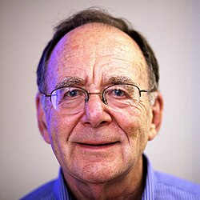

Richard Manning Karp | |
|---|---|
 Karp in 2009 | |
| Born | January 3, 1935 |
| Education | Harvard University (BA, MA, PhD) |
| Known for | Aanderaa–Karp–Rosenberg conjecture Edmonds–Karp algorithm Held–Karp algorithm Hopcroft–Karp algorithm Karmarkar–Karp algorithm Rabin–Karp string search algorithm Karp–Lipton theorem Karp's 21 NP-complete problems Vector addition system |
| Awards | Fulkerson Prize (1979) Turing Award (1985) John von Neumann Theory Prize (1990) IEEE Computer Society Charles Babbage Award (1995) National Medal of Science (1996) Harvey Prize (1998) EATCS award (2000) Benjamin Franklin Medal (2004) Kyoto Prize (2008) |
| Scientific career | |
| Fields | Mathematics Computer science |
| Institutions | University of California, Berkeley IBM |
| Thesis | Some applications of logical syntax to digital computer programming (1959) |
| Anthony Oettinger[1] | |
Doctoral students | |
Richard Manning Karp (born January 3, 1935) is an American computer scientist and computational theorist at the University of California, Berkeley. He is most notable for his research in the theory of algorithms, for which he received the 1985 ACM Turing Award, The Benjamin Franklin Medal in Computer and Cognitive Science in 2004, and the Kyoto Prize in 2008.[2]
Karp was elected a member of the National Academy of Engineering (1992) for major contributions to the theory and application of NP-completeness, constructing efficient combinatorial algorithms, and applying probabilistic methods in computer science.
Born to parents Abraham and Rose Karp in Boston, Massachusetts, Karp has three younger siblings: Robert, David, and Carolyn. His family was Jewish,[3] and he grew up in a small apartment, in a then mostly Jewish neighborhood of Dorchester in Boston.
Both his parents were Harvard graduates (his mother eventually obtaining her Harvard degree at age 57 after taking evening courses), while his father had had ambitions to go to medical school after Harvard, but became a mathematics teacher as he could not afford the medical school fees.[3] He attended Harvard University, where he received his bachelor's degree in 1955, his master's degree in 1956, and his Ph.D. in applied mathematics in 1959. He started working at IBM's Thomas J. Watson Research Center.
In 1968, Karp became professor of computer science, mathematics, and operations research at the University of California, Berkeley. Karp was the first associate chair of the Computer Science Division within the Department of Electrical Engineering and Computer Science.[4] Apart from a 4-year period as a professor at the University of Washington, he has remained at Berkeley. From 1988 to 1995 and 1999 to the present he has also been a research scientist at the International Computer Science Institute in Berkeley, where he currently leads the Algorithms Group.
Richard Karp was awarded the National Medal of Science, and was the recipient of the Harvey Prize of the Technion and the 2004 Benjamin Franklin Medal in Computer and Cognitive Science for his insights into computational complexity. In 1994 he was inducted as a Fellow of the Association for Computing Machinery. He was elected to the 2002 class of Fellows of the Institute for Operations Research and the Management Sciences.[5] He is the recipient of several honorary degrees and a member of the U.S. National Academy of Sciences,[6] the American Academy of Arts and Sciences,[7] and the American Philosophical Society.[8]
In 2012, Karp became the founding director of the Simons Institute for the Theory of Computing at the University of California, Berkeley.[9]
Karp has made many important discoveries in computer science, combinatorial algorithms, and operations research. His major current research interests include bioinformatics.
In 1962 he co-developed with Michael Held the Held–Karp algorithm, an exact exponential-time algorithm for the travelling salesman problem.
In 1971 he co-developed with Jack Edmonds the Edmonds–Karp algorithm for solving the maximum flow problem on networks, and in 1972 he published a landmark paper in complexity theory, "Reducibility Among Combinatorial Problems", in which he proved 21 problems to be NP-complete.[10]
In 1973 he and John Hopcroft published the Hopcroft–Karp algorithm, the fastest known method for finding maximum cardinality matchings in bipartite graphs.
In 1980, along with Richard J. Lipton, Karp proved the Karp–Lipton theorem (which proves that if SAT can be solved by Boolean circuits with a polynomial number of logic gates, then the polynomial hierarchy collapses to its second level).
In 1987 he co-developed with Michael O. Rabin the Rabin–Karp string search algorithm.
His citation[11] for the (1985) Turing Award was as follows:
For his continuing contributions to the theory of algorithms including the development of efficient algorithms for network flow and other combinatorial optimization problems, the identification of polynomial-time computability with the intuitive notion of algorithmic efficiency, and, most notably, contributions to the theory of NP-completeness. Karp introduced the now standard methodology for proving problems to be NP-complete which has led to the identification of many theoretical and practical problems as being computationally difficult.
{kind=link}